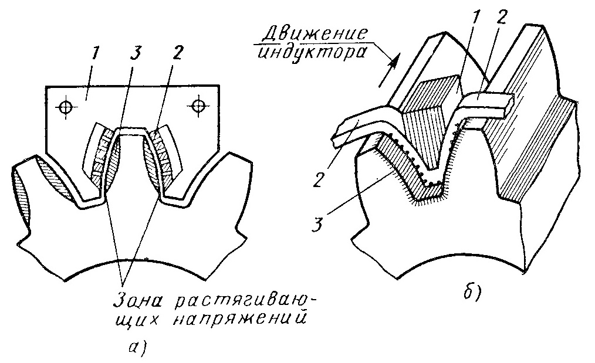
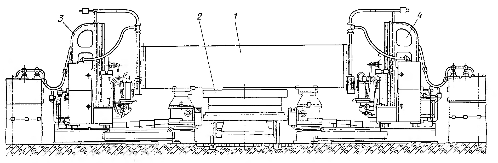
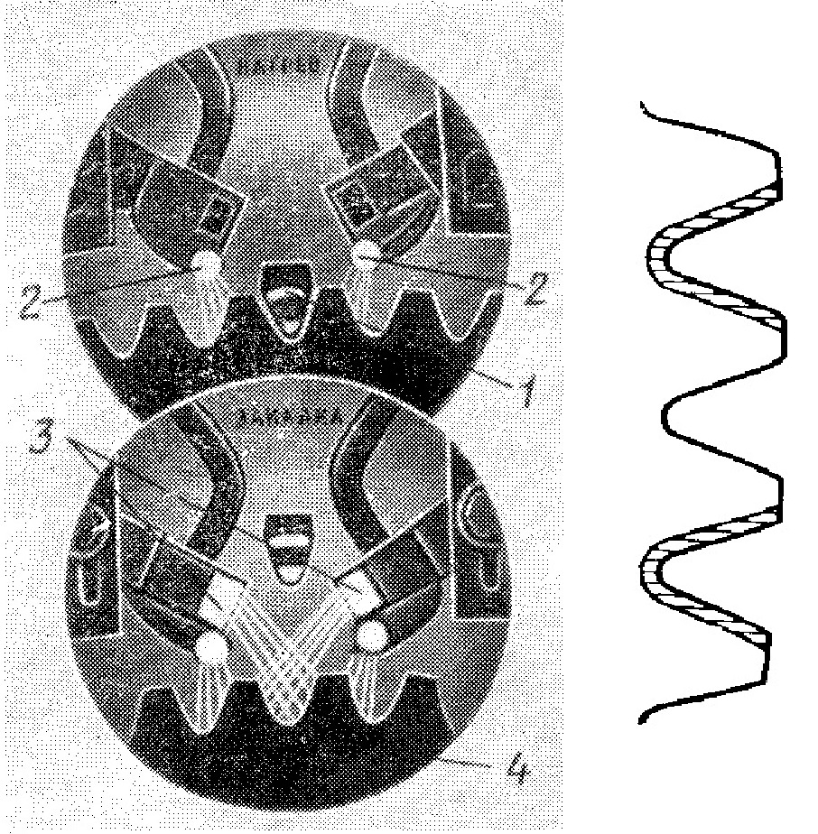

Зубчатые колеса широко применяют в машинах, механизмах и приборах различных отраслей машиностроения. Наилучшая макрострутура у зубчатых колес получается при штамповке, когда расположение волокон соответствует конфигурации колеса, так как в этом случае прочность на изгиб повышается.
При выборе стали для изготовления зубчатых колес необходимо учитывать ее стоимость, обрабатываемость, прокаливаемость и деформацию колеса при термической обработке. Так как основным элементом зубчатого колеса является зуб, применяемые стали и методы упрочнения должны обеспечивать высокую контактную и усталостную прочность, прочность при изгибе, ударе и износостойкость зуба.
Цементируемые зубчатые колеса изготовляют из сталей 20Х, 12ХНЗА, 12Х2Н4А, 20Х2Н4А, 25ХГМ, 20ХН2М, 18ХГТ, 25ХГТ, ЗОХГТ, 20ХГР, 18Х2Н4ВА и др.
Для подготовки структуры к обработке колес на металлорежущих станках и для улучшения механических свойств готовых зубчатых колес штампованные заготовки перед обработкой на металлорежущих станках подвергают термической обработке - отжигу (полному, изотермическому) или нормализации, или нормализации с высоким отпуском.
Наилучшей для резания (получение наименее шероховатой поверхности металла) является структура после изотермического отжига по режиму: нагрев до температуры в точке Ас3 + 50 °С, выдержка, крапювременное переохлаждение до 480-500 °С и изотермическая выдержка при 580-600 °С.
Для штампованных заготовок из цементуемых хромомарганцовистых и хромоникелевых сталей применяют также ускоренное охлаждение штампованных заготовок от температуры конца ковки до 500-600 °С с последующим использованием остаточного тепла.
Зубчатые колеса из хромомарганцетитановых сталей (18ХГТ, 25ХГТ, 30ХГТ) подвергают газовой цементации (nри температуре 920-950 °С) с непосредственной закалкой из цементационной печи после предварительного подстуживания до 840-860 °С. После закалки зубчатые Iюлеса подвергают отпуску при 180- 2000 °С. На поверхности достигается твердость HRC 56-62, а в сердцевине HRC 30-45 (нижний предел для стали 18ХГТ, верхний - для стали 30ХГТ). Микроструктура цементованного слоя - мелкоигольчатый мартенсит с мелкими включениями карбидов и небольшим количеством остаточного аустенита; сердцевины - сорбит (для стали 18ХГТ) и троостосорбит (для стали 30ХГТ).
Для газовой цементации зубчатых колес применяют муфельные и безмуфельные печи. Обычно обработку проводят на поточных линиях, в которые входят толкательная печь для газовой цементации, механизированный закалочный бак, промывочная машина, печь для отпуска, камера для охлаждения колес после отпуска. Температура в печи для газовой цементации по длине рабочей камеры поддерживается равной температуре цементации, а у разгрузочного конца температура понижается до температуры подстуживания.
Для получения зубчатых колес с твердостью поверхности зубьев HRC ≥ 60 и уменьшения биения зубьев по начальной окружности применяют процесс нитроцементации в безмуфельном агрегате. Зубчатые колеса, например из стали 25ХГМ, подвергают нитроцементации при 870 °С, подстуживают до 840 °С, охлаждают в горячем масле с температурой 160-180 °С и отпускают при 160-180 °С; получаемая твердость поверхности зуба HRC 60-65, сердцевины HRC 35-45.
Зубчатые колеса из хромоникелевых сталей 12Х2Н4А, 20Х2Н4А и других непосредственной закалке не подвергают - получается большое количество остаточного аустенита, что снижает твердость поверхности зуба. Поэтому зубчатые колеса из этих сталей после цементации охлаждают на воздухе, подвергают высокому отпуску при 600- 650 °С (для подготовки структуры цементованного слоя под закалку; во время отпуска происходит распад остаточного аустенита и мартенсита и выделяются карбиды), закаливают в масле от 800- 820 °С и подвергают низкому отпуску при 180-200 °С. Для уменьшения деформации зубчатые колеса после высокого отпуска до закалки иногда подвергают шевингованию.
Зубчатые колеса изготовляют из улучшаемых сталей, например 45, 40Х, 40ХН и др., а та кже из стали 55ПП пониженной прокаливаемости. В зависимости от условий работы зубчатые колеса подвергают различной термической обработке : нормализации, улучшению, закалке и низкому отпуску, цианированию (нитроцементации) с последующей закалкой и отпуском.
Зубчатые колеса, работающие при низких скоростях и малых давлениях, изготавливают из стали 45 и подвергают нормализации при 850-870 °С (твердость НВ 170-217) или улучшению закале в воде от 820-840 °С и отпуску при 520-550 °С (НВ 220- 250).
Зубчатые колеса, работающие при значительных изгибающих нагрузках и небольших скоростях, изготовляют из легированных среднеуглеродистых сталей и подвергают улучшению - закалке в масле и отпуску при 600-650 °С (НВ 230- 260).
Зубчатые колеса, работающие при средних скоростях, средних давлениях и небольших ударных нагрузках, изготавливают из легированных среднеуглеродистых сталей. Режимы термической обработки зубчатых колес из этих сталей следующие: а) закалка в масле и отпуск при 180-200 °С (HRC 50-55); б) цианирование (нитроцементация) при 830-850 °С, закалка в масле и отпуск при 180-200 °С (HRC 55-60); толщина слоя должна быть в пределах 0,2-0,3 мм, для чего необходима выдержка 30-50 мин при цианировании и 1-2 ч при нитроцементации.
При закалке со сквозным нагревом зубьев зубчатых колес из сталей, например 45, 40Х, в индукторе нагреваются (до 850- 870 °С), а затем охлаждаются (водяным душем или погружением зубчатого колеса в масло) сразу все зубья зубчатого колеса. Зубья прокаливаются насквозь. На некоторую глубину (до 5 мм) закаливается также и обод зубчатого колеса. После закалки осуществляют низкий отпуск; твердость поверхности зуба HRC 58-60, а сердцевины - HRC 45-55. Этот метод применяют при закалке зубчатых колес, слабо нагруженных и малого модуля (до 4 мм), так как весь зуб имеет высокую твердость и возможны его поломки в процессе эксплуатации. Зубчатые колеса с модулем более 4 мм закаливать этим способом нецелесообразно.
Методом закалки со сквозным нагревом зубьев можно упрочнять и тяжелонагруженные зубчатые колеса (среднего модуля 4-10 мм), изготовленные из стали пониженной прокаливаемости. В этом случае применяют объемно-поверхностную закалку (при глубинном индукционном нагреве) - способ, разработанный профессором К. З. Шепеляковским и применяемый на многих заводах. При поверхностной закалке с глубинным нагревом необходимым является применение интенсивного охлаждения быстродвижущейся водой (потоком воды или душем). Для выполнения такого охлаждения применяют специальные закалочные устройства, одно из которых показано на рисунке. Вода подается по трубопроводу 1 диаметром 150 мм; проходит по кольцевому пазу 2, который направляет ее в зазор между обрабатываемым зубчатым колесом 3 и индуктором 4. До включения закалочная вода находится на уровне 5. Такая система охлаждения дает хорошие результаты при закалке зубчатых колес модулем 6-10 мм.
Режим закалки зубчатых колес с модулем 6 мм следующий~ частота тока 2650 Гц, общее время нагрева 90 с, температура нагрева 850 °С, длительность охлаждения (закалка с самоотпуском при 200-210 °С, что эквивалентно отпуску в печи при 150-160 °С) 6,5 с, расход охлаждающей воды 100 л/с, производительность 30 деталей в час.
В результате такой закалки получается слой высокой твердости (HRC 59-61) толщиной (у корня зуба) 1,9 мм, расположенный по контуру зубьев и впадин, обеспечивающий большую износостойкость, контактную и усталостную прочность зубьев. Сердцевина зуба имеет твердость HRC 30-35, что обеспечивает его высокую прочность.
Зубчатые колеса из стали пониженной прокаливаемости, упрочненные объемно-поверхностной закалкой (при глубинном индукционном нагреве), по статической, динамической и усталостной прочности зубьев превосходят такие же зубчатые колеса из хромомарганцетитановых, хромоникелевых и других сталей, подвергнутые цементации и закалке.
Крупногабаритные зубчатые колеса закаливают методом «по зубу» (а) или «по впадине» (6). Недостаток метода закалки «по зубу» - снижение усталостной прочности зуба. Причина этого недостатка - концентрация напряжений на границе закаленного слоя и поверхности зуба. При закалке по впадине наиболее нагруженное место зубчатого колеса закаливается, выход растягивающих напряжений на поверхность вершины зуба не опасен, так как это место зуба не испытывает каких-либо нагрузок. Для поверхностной закалки зубчатых колес применяют различные индукторы, nозволяющие проводить закалку методом «по зубу» или «по впадине» одновременным или непрерывно-последовательным способом.
Поверхностная закалка зубчатых колес осуществляется на специальных станках и установках.
Установка состоит из двух закалочных станков и механизированной тележки. Зубчатое колесо 1 устанавливают на механизированную тележку 2 в механическом цехе и транспортируют на закалочный участок. Закалку проводят с противоположных сторон, одновременно двумя закалочными станками 3 и 4. По окончании закалки всех зубьев закаленное зубчатое колесо вывозят на той же тележке. Применяя различные индукторы, можно проводить закалку по впадине одновременным способом (зубчатых колес с модулем 10-16 мм при длине зуба не свыше 200 мм) и непрерывно-последовательным способом (зубчатых колес с модулем 16 мм и выше).
При закалке «по впадине» одновременным способом индуктор 1 вводят между зубьев с зазором между индуктором и нагреваемой поверхностью 2-2,5 мм. При этом нагреваются впадина и обе соседние поверхности по всей длине зуба. Спрейеры 2 подстуживания непрерывно охлаждают наружные поверхности нагреваемых зубьев во избежание отпуска ранее закаленных поверхностей. По окончании нагрева, продолжающегося несколько секунд, индуктор 1 выводят из впадины, и после паузы (для выравнивания температуры) из закалочных спрейеров 3 нагретая поверхность охлаждается водой в течение времени, обеспечивающего закалку с самоотпуском. По окончании закалки зубчатое колесо 4 поворачивают на один зуб, индуктор вводят в очередную впадину между зубьями и процесс повторяют.
Иногда при закалке крупномодульных зубчатых колес на некоторых зубьях на стороне, противоположной предшествующей закалке, из-за возникновения тепловых и структурных напряжений появляются трещины. Чтобы избежать появления трещин, целесообразно применять способ закалки «по впадине через зуб», заключающийся в следующем. Сначала проводят первую индукционную закалку «по впадине через зуб».
После первой закалки зубчатое колесо подвергают отпуску при 180-200 °С. После отпуска закаливают необработанные стороны зубьев, а затем вновь проводят низкий отпуск. При таком способе трещины на поверхности зубьев не возникают.